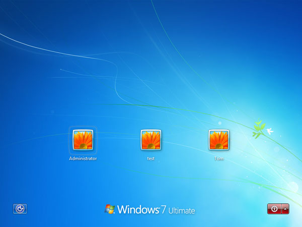

Desktop

Zaslon dobrodošlice

Windows 7 ili projekt Blackcomb, a kasnije Vienna, je objavljen 22. listopada 2009. godine. Windows 7 je trebao biti nasljednik Windows-a XP, ali je odgođen, a umjesto njega je razvijena Windows Vista. Windows 7 je nastavio s razvijanjem Aero teme, koja je u ovom operacijskom sustavu doživjela svoj vrhunac. Bill Gates je za ovaj sustav rekao da će biti nasljednik Windows-a Viste, ali sa brojnim poboljšanjima, od kojih su najveća u području performansi. Dok je Steve Ballmer, Microsoft-ov izvršni direktor, rekao da je Windows 7 uglađena verzija operacijskog sustava Windows Vista. Windows 7 je donio brojne nove mogućnosti i komponente. Od vizualnih su tu: nova traka zadataka pod nazivom Superbar koja je izgubila traku za brzo pokretanje tako što je omogućila „kvačenje“ bilo kojeg programa na sebe, zatim programčići (eng. gadgeti) koji sada nisu morali biti unutar Sidebara i brojne nove mogućnosti upravljanja prozorima od kojih je i danas najpoznatiji Windows Snap koji automatski prilagođava veličinu prozora na pola veličine zaslona, te ga smješta u lijevu ili desnu polovicu „udarcem“ prozora o rub zaslona. Od Microsoft-ovih programa, WMP prelazi na verziju 12, IE na verziju 8.0, a posebno iznenađenje je napravio Windows Defender – besplatni antivirus za Windows 7. Sigurnosna poboljšanja su dodana u obliku enkripcije čitavog diska, koji se razvio iz prethodnika, automatskog stvaranja točke vraćanja za komponentu Vraćanje sustava, te je razvijeno Windows-ovo okruženje za oporavak, koje omogućava lakši oporavak sustava nakon neuspjelog pokretanja. Od novih mogućnosti su tu promjena jezika prema preferencijama svakog korisnika, zatim biblioteke koje omogućavaju smještaj dokumenata po vrsti, podrška za SSD diskove, dodana je i podrška za USB 3.0, a i Windows UAC je usavršen tako da ne onemogućava pristup programima koji imaju valjan Microsoft-ov digitalni potpis. Windows 7 je objavljen u šest verzija koje su nosile identična imena kao i kod Windows Viste, s tim što je verzija Business dobila naziv Professional, a najveći broj mogućnosti je imala verzija Enterprise, za razliku od verzije Ultimate kod prethodnika. Za operacijski sustav Windows 7 objavljen je jedan servisni paket 22. veljače 2011. godine, koji je donio neka poboljšanja u vezi procesorskih instrukcija (AVX), a uz to je popravljena i greška sa zvukom preko HDMI izlaza. Uz servisni paket je objavljena i jedna nadgradnja platforme 5. studenog 2012. godine s kojom se IE popeo na verziju 10, dok je verzija 9.0 bila prije objavljena preko servisa Windows Update. U nadgradnji platforme općenito je poboljšan rad sustava Windows 7 sa grafikama, fotografijama, video zapisima i 3D modelima. DirectX 10 je preuzet iz Viste, a ovom nadgradnjom pokazuje svoj pravi potencijal. Kao i njegovi prethodnici, Windows 7 je imao i svoju serversku verziju pod nazivom Windows Server 2008 R2. Operacijski sustav Windows 7 je postigao mnogo veći uspjeh nego njegov prethodnik, Windows Vista, te su njegove narudžbe, prije samog objavljivanja, premašile broj prodanih Windows Vista primjeraka u svojih prvih 17 tjedana prodaje. Windows 7 se smatra pravim nasljednikom operacijskog sustava Windows XP zbog svoje popularnosti. Windows XP je bio najkorišteniji operacijski sustav sve do kolovoza 2012. godine, kada ga prestiže Windows 7, koji zadržava svoju dominaciju sve do siječnja 2019. godine. Njegova sličnost s operacijskim sustavom Windows XP se očituje upravo u toj njegovoj popularnosti unatoč postojanju puno novijih verzija operacijskog sustava Windows. Podrška za Windows 7 je trajala sve do 14. siječnja 2020. godine, od kada je Microsoft omogućio plaćanje za nadgradnje korisnicima koji još uvijek žele koristiti ovaj operacijski sustav. Ova ponuda svjedoči o tome koliko je ovaj operacijski sustav bio uspješan, a i današnji broj aktivnih korisnika mu ide u prilog.
Predstavljen: 2009.
Arhitektura: 64-bitna i 32-bitna
Podrška: Traje do 2022.g. uz plaćanje
Stranica je kreirana u sklopu kolegija Informatički Projekt 1 na Fakultetu prirodoslovnih matematičkih i odgojnih znanosti Mostar.
FPMOZ© 2021